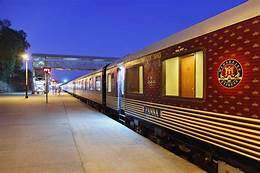

<section class="about">
    <div class="row">
      <div class="about-col">
        <h1>About Online Reservation</h1>
        <p> The Indian railway website is the most traffic-filled site. The tickets are usually 
            booked throughthis official site.If you are planning to book tickets the day before 
             your departure date tatkal tickets are available from 10:00 AM and ends as soon as  
            the tickets are booked. The tickets are limited and the demand will be sky-high. If  
            you are able to reserve a ticket through tatkal  you can get berth seats. Cancellation
            of tatkal ticket will not be refunded. Anyone can reserve tickets through this app.You  
            can pay through debit card, credit card, international card and others.On the other hand 
            you can choose tour portals to reserve tickets.The sites will be faster and user-friendly. 
             Not all trains will be displayed in such portals and a small fee will be levied as service charge.
        </p>    
        </div>
      <div class="about-col">
          
      </div>
      <h2 class="text-left">Things Needed For Reserving a Ticket</h2>
      <ol type="a">
      <li>Details of departure station, arrival station, time, number of tickets, name of passengers and age.</li>
      <li>Debit card or credit card for online booking. or UPI Id</li>
      <li>For over-the-counter booking, you would need a reservation form</li>
      </ol>
    </div>

</section>
